This was one of my first major robotics projects where I explored advanced robotic manipulation and challenged myself to design a highly dexterous robotic gripper. The goal was to create a system capable of complex object manipulation through increased degrees of freedom and mechanical versatility.
The initial concept was a tri-finger robotic gripper with a rotating base that allowed adjustable positioning of the fingers. This design provided a foundation for exploring more advanced manipulation capabilities through additional degrees of freedom.
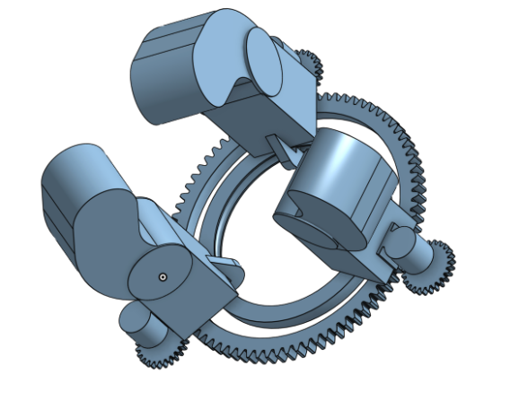
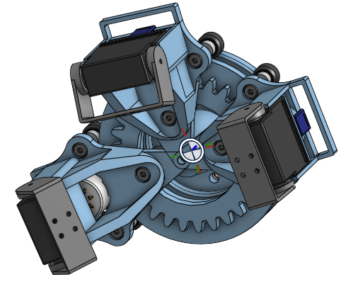
After evaluating the first design, I realized that the system lacked the dexterity required for more complex manipulation tasks. I began exploring alternative mechanisms and additional degrees of freedom.
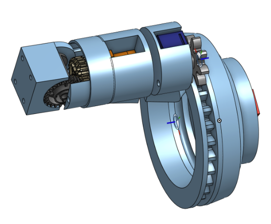
This iteration introduced 3 degrees of freedom per finger, allowing the fingertip to rotate for improved gripping capabilities. While this design improved functionality, I continued refining the mechanical design to create a more compact and capable system.
The final design evolved into a 5-degree-of-freedom per finger robotic gripper. This allowed each finger to rotate, extend, reposition, and perform more complex manipulation motions. The final design was created to be mounted onto a Panda robotic arm.
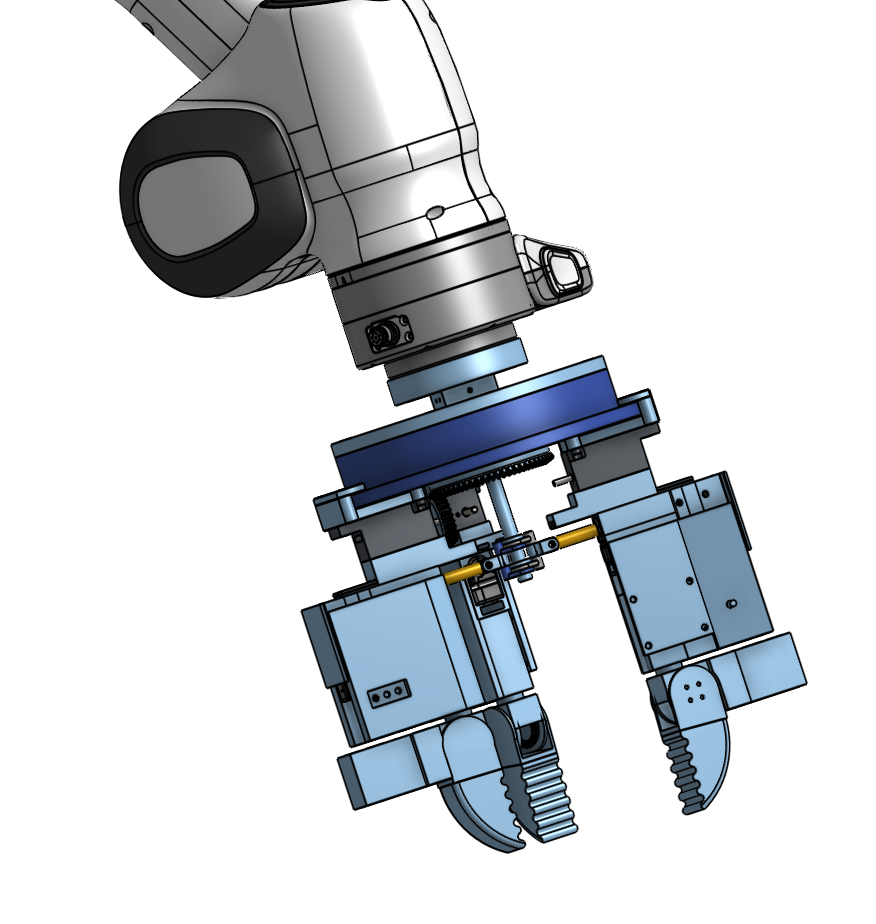
After multiple 3D printed prototypes and design iterations, the final CAD model was completed.
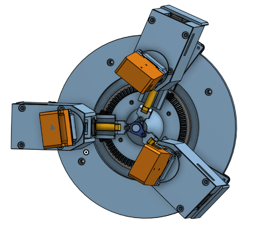
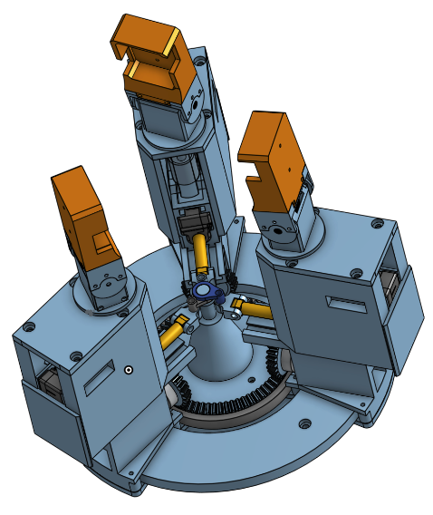
Below are the different motions contained within a single finger.
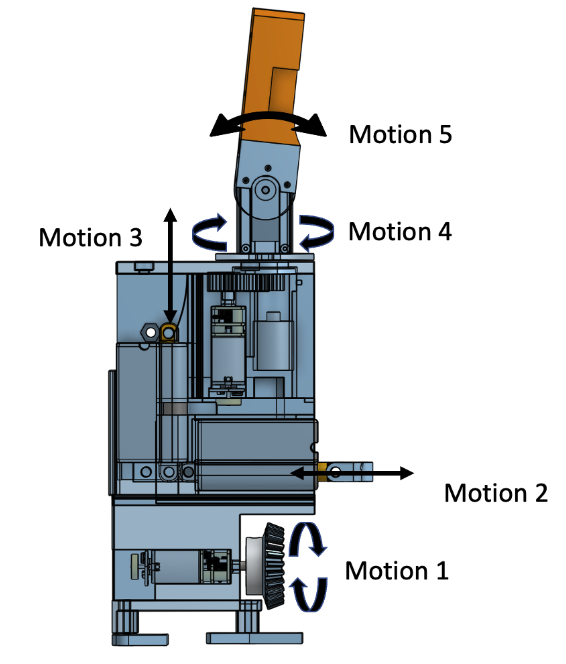
One of the biggest mechanical challenges was designing the fourth and fifth motions while preventing wire tangling. After learning about slip rings and exploring different mechanical layouts, I developed a solution that allowed continuous rotation while maintaining electrical connections.
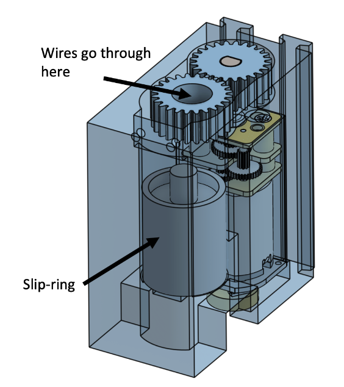
With the mechanical design completed, the gripper was assembled and prepared for testing.
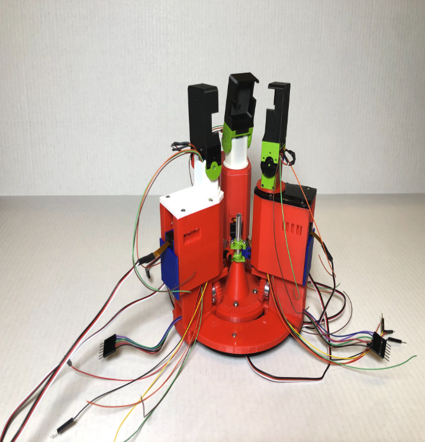
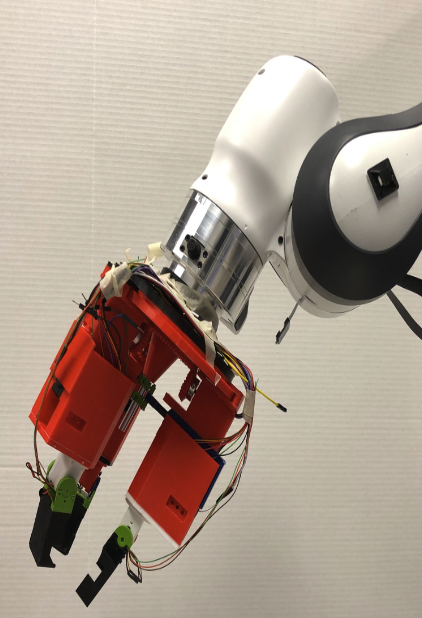
The electrical and software integration was one of the largest learning experiences during this project. The system required controlling 15 motors consisting of both servo motors and DC motors with Hall sensors.
Initially, I was unfamiliar with the additional hardware requirements of DC motors, including motor drivers and feedback control. Through testing and iteration, I developed a control system using an Arduino Mega capable of coordinating synchronous movement across the different actuators.
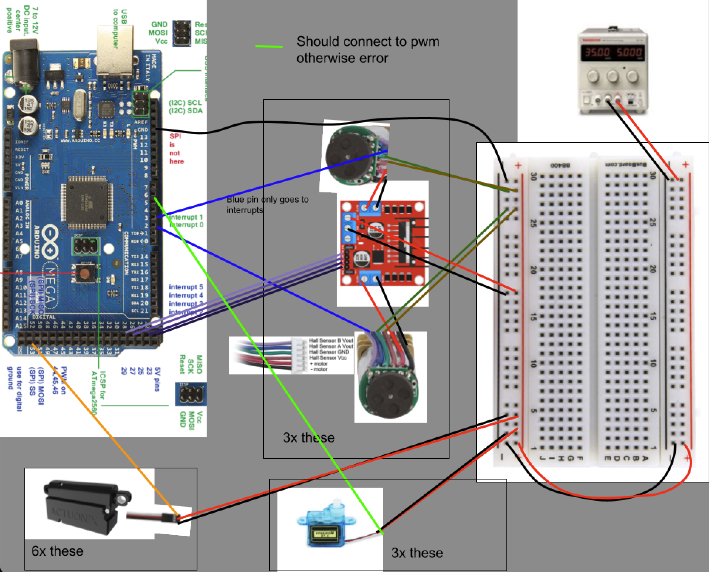
The final wiring system was complex, but manageable, and provided valuable experience integrating mechanical systems with electronics and embedded control.
Testing was performed to validate the mechanical motions and control system. While some motions could not be fully evaluated due to electronic component issues, the testing process helped identify improvements for future iterations.
This project was a major milestone in my robotics journey and helped me develop experience across mechanical design, electronics, embedded systems, and robotic integration.
Through multiple design iterations, prototyping, and testing, I transformed an initial concept into a functional multi-degree-of-freedom robotic gripper. The project challenged me to think about how mechanical systems, software, and electronics must work together to create reliable robotic platforms.
Although there are still opportunities for additional testing and refinement, this project strengthened my interest in robotics hardware development and designing complex systems that bridge mechanical and software engineering.
Socials